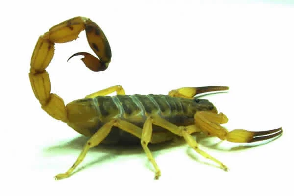
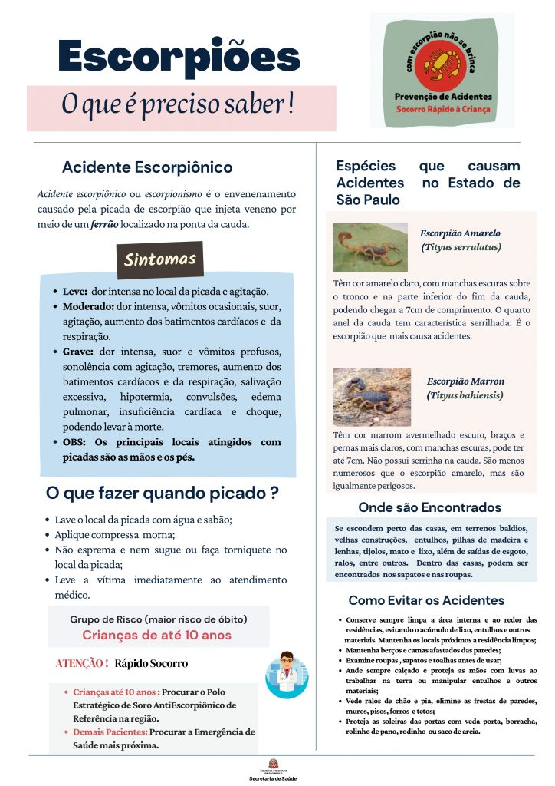

INFORMAÇÕES
Orientações sobre cuidados para evitar acidentes com escorpião em Hortolândia
Redação Portal Hortolândia - 9 de novembro de 2021
Escorpião
Fonte: Portal de Hortolândia
Aumento da temperatura nesta época do ano favorece a reprodução do animal peçonhento.
O aumento da temperatura, característico nesta época do ano, é um fator que favorece a reprodução do escorpião. É por este motivo que a população deve redobrar os cuidados para evitar acidentes com esse animal peçonhento.
A Prefeitura de Hortolândia já realiza constantemente o controle e a vigilância de escorpiões na cidade junto com ações de orientação com a população. Este trabalho vem de encontro à realização pelo governo do Estado da Semana de Mobilização contra o escorpião e o Aedes aegypti, que começou nesta segunda-feira (08/11).
Outra característica desta época do ano é o aumento das chuvas. Este fator também contribui para a maior aparição de escorpiões no ambiente urbano, explica a médica veterinária da UVZ (Unidade de Vigilância e Zoonoses), órgão da Secretaria de Saúde, Tosca de Lucca Benini Tomass. “As chuvas causam o desalojamento dos escorpiões dos seus esconderijos. Isso faz com que esses animais procurem abrigo nas redes subterrâneas de esgoto e águas pluviais”, salienta a especialista.
Como parte das ações de controle e vigilância de escorpiões na cidade, a UVZ realiza nesta semana o trabalho de investigação de casos notificados de acidentes com esses animais em imóveis residenciais, comerciais e industriais. Na ação, os agentes do órgão também orientam a população sobre como evitar a entrada de escorpiões nos imóveis.
Dentre as medidas recomendadas pela médica veterinária Tosca Tomass estão colocar telas milimétricas (telas com tramas milemetricamente entrelaçadas) em janelas e ralos internos, externos e de pias, grelhas de quintais ou algum outro tipo de dispositivo que não permita a entrada de escorpião pelos ralos, vedar frestas e bloquear o acesso dos escorpiões em espelhos de luz, pontos de iluminação e caixas de gordura e esgoto.
Outra medida importante é manter limpas as áreas externas do imóvel e evitar o armazenamento de materiais como tijolos e telhas, que podem servir de esconderijo para o escorpião. Caso seja necessário armazenar tais materiais, a médica veterinária orienta colocá-los em locais externos afastados do imóvel e em cima de algum apoio (estrado ou pallet). Restos de construção devem ser descartados, pois também servem de esconderijo para escorpiões. A Prefeitura salienta que o descarte deste tipo de material deve ser feito nos 11 PEVs (Pontos de Entrega Voluntária de entulho e outros materiais recicláveis) existentes na cidade. A lista dos PEVs está disponível no site da Prefeitura, por meio deste LINK. Neste mês, a Prefeitura inaugurará mais dois PEVs no município.
A especialista também recomenda vedar frestas e buracos em paredes, assoalhos, soleiras de porta, aberturas entre o telhado e as paredes, e consertar rodapés soltos ou despregados. “É importante também que os moradores prestem atenção se há algum vão no forro porque o escorpião pode entrar por essa abertura e acessar a tubulação de fiação elétrica”, salienta Tosca.
RESIDÊNCIAS
Em imóveis residenciais, para evitar acidentes com escorpião, a médica veterinária ainda recomenda cuidados simples, tais como sacudir roupas e calçados antes de usá-los, pendurar toalhas úmidas em cabideiros ou box, afastar camas e móveis das paredes e evitar que roupas de cama, cobertores e mosquiteiros (redes de proteção contra insetos) fiquem encostadas até o chão.
A UVZ também realiza o monitoramento contínuo de escorpiões por meio da instalação de armadilhas nas redes de água pluvial e esgoto em diferentes regiões da cidade. As armadilhas consistem de placas de espuma ondulada instaladas pelo órgão nessas redes subterrâneas. Os escorpiões se escondem nesses locais durante o dia. O órgão realiza o armadilhamento desde 2019, quando constatou a suspeita de que os escorpiões mudaram de hábitos na área urbana. A médica veterinária Tosca Tomass ressalta que essa mudança de comportamento é verificada não apenas em Hortolândia, mas também em outros municípios do país.
Caso a população encontre escorpião em casa ou na região perto de onde mora, deve entrar em contato imediatamente com a UVZ pelo telefone (19) 3897-3312, que funciona 24 horas, ou pelo e-mail uvz@hortolandia.sp.gov.br. Os agentes do órgão irão até o local para recolher o animal e vistoriar a área. Durante a visita dos agentes, os moradores devem manter o uso obrigatório de máscara.
Outra orientação importante dada pela médica veterinária é para que o morador evite capturar o escorpião e usar veneno ou inseticida comum para matá-lo, pois estes produtos podem deixar o escorpião mais agitado, aumentando a possibilidade de provocar acidente com picada. O escorpião só pica se sentir ameaçado ou for tocado.
Em caso de acidente ou picada de escorpião, a Secretaria de Saúde orienta para que a vítima seja levada imediatamente para alguma das UPAs (Unidades de Pronto Atendimento) do município ou o Hospital Municipal. De acordo com dados da Vigilância Epidemiológica, órgão da Secretaria de Saúde, neste ano o município registra 113 casos de acidentes com escorpião. Em 2020, o número de caso foi de 116.
Controle de escorpiões em Hortolândia: Ações da prefeitura e orientações à população
Redação G. - 26 de dezembro de 2024
Escorpião
A Prefeitura de Hortolândia, por meio da Secretaria de Saúde, informou ao Portal Hortolândia que segue as diretrizes do Ministério da Saúde para o controle de escorpiões no município. De acordo com estudos científicos, o uso de produtos químicos não é comprovadamente eficaz para controlar esses animais em ambientes naturais, sendo recomendadas medidas de manejo ambiental e barreiras mecânicas para evitar a proliferação.
De acordo com a Secretaria de Saúde da cidade, a Unidade de Vigilância de Zoonoses (UVZ) desempenha papel central nessas ações, com monitoramento contínuo, investigações de acidentes e visitas às áreas mais afetadas. A UVZ mantém contato com o Centro de Vigilância Epidemiológica do Estado e destaca que o uso de veneno pode aumentar a dispersão de escorpiões, elevando o risco de acidentes.
Desde 2019, a UVZ realiza a instalação de armadilhas nas redes de esgoto e águas pluviais, constatando mudanças nos hábitos dos escorpiões, que agora utilizam essas áreas como abrigo durante o dia. O órgão também distribui materiais informativos e orienta a população sobre práticas para evitar o alojamento de escorpiões, como a organização dos imóveis, instalação de barreiras mecânicas e descarte correto de lixo.
Em caso de acidentes, o atendimento inicial é feito no Hospital Municipal Mario Covas e nas UPAs do município. Casos mais graves são encaminhados ao Hospital Estadual de Sumaré ou ao CIATox da Unicamp. Em 2024, foram registrados 167 acidentes com escorpiões, sem óbitos.
Medidas de Prevenção Recomendadas pela UVZ:
- Manter quintais sem acúmulo de materiais inservíveis e vegetação podada.
- Instalar barreiras mecânicas em portas, janelas e ralos.
- Descartar lixo e materiais recicláveis nos Pontos de Entrega Voluntária (PEVs).
Essas ações visam reduzir os riscos de acidentes e controlar a presença de escorpiões em Hortolândia, garantindo maior segurança para a população.
Prefeitura de Hortolândia orienta população para evitar acidentes com escorpião dentro de casa
Prefeitura — 5 de maio de 2021
Em virtude da necessidade de se manter o isolamento social para conter a disseminação do Coronavírus, as pessoas têm passado mais tempo dentro de suas casas. A Prefeitura de Hortolândia orienta os moradores a tomar cuidado para prevenir acidentes com escorpião, situação que pode acontecer no ambiente doméstico.
Para evitar a entrada deste animal artrópode em casa, a UVZ (Unidade de Vigilância e Zoonoses), órgão da Secretaria de Saúde, orienta a população a adotar algumas medidas. Uma delas é vedar frestas e buracos em paredes, assoalhos, soleiras de portas, vãos em forro, aberturas entre o telhado e as paredes, e consertar rodapés que estejam soltos ou despregados. Outra medida apontada pela veterinária do órgão, Tosca de Lucca Benini Tomass, é a instalação de telas milimétricas (telas com tramas milemetricamente entrelaçadas) em janelas e ralos internos e externos, ou algum outro tipo de dispositivo que não permita a entrada de escorpião pelos ralos.
A população também deve ficar atenta com os ambientes externos da casa. A veterinária Tosca Tomass orienta para manter quintais e jardins limpos. No caso de jardins, a grama deve ser aparada com frequência e evitar o acúmulo de folhas secas. Também deve se evitar o acúmulo de entulho e restos de construção em áreas externas ou próximas à residência. “Sempre que for manusear jardins, pedras, troncos podres, entulhos e restos de material de construção, utilizar luvas de raspa feitas de couro, sapatos fechados e calça comprida”, salienta Tosca.
A veterinária ainda recomenda outros cuidados para evitar acidentes com escorpião, tais como sacudir roupas e calçados antes de usá-los, afastar camas e móveis das paredes e evitar que roupas de cama e mosquiteiros (redes de proteção contra insetos) fiquem encostadas até o chão.
ACIDENTE
Em caso de acontecer acidente com escorpião, a veterinária Tosca Tomass orienta que a parte do corpo picada deve ser lavada com água e sabão, ser feita compressa morna e procurar a unidade de saúde mais próxima. A veterinária ainda salienta que não se deve colocar gelo ou água fria na parte do corpo picada. Também não se deve fazer torniquete ou garrote, perfuração ou corte, e muito menos fazer sucção para retirar o veneno. Também não se deve aplicar qualquer tipo de substância na parte do corpo picada. A vítima também não deve ingerir álcool. “O escorpião não é um animal agressivo, ou seja, não ataca. Ele pica quando são tocados ou se sente ameaçado”, explica Tosca. A veterinária ainda ressalta que o uso de veneno não surte efeito na eliminação de escorpião.
Caso seja constatada a presença de escorpião em casa ou na região onde a pessoa mora, a orientação é para que a população entre em contato com a UVZ pelos telefones (19) 3897-5974 ou (19) 3897-3312. De acordo com a veterinária, o órgão recebeu neste ano 88 demandas sobre presença de escorpião. Já neste mesmo período em 2020, foram 83 demandas. Já a Vigilância Epidemiológica, órgão da Secretaria de Saúde, informa que neste ano o município registra 44 notificações de acidentes com escorpião. Neste mesmo período do ano passado, foram 28 notificações.
ARMADILHAS
Para monitorar a presença de escorpiões em diferentes regiões da cidade, a UVZ coloca armadilhas, que consistem de placas de espuma ondulada, em galerias subterrâneas de águas pluviais e de esgoto, locais onde os artrópodes se escondem durante o dia. A presença de escorpiões nestas armadilhas confirmou a suspeita que estes animais mudaram de hábitos na área urbana.
Este artigo foi enviado pela Prefeitura de Hortolândia
O que Fazer em Caso de Acidente com Escorpião
Em caso de picada por escorpião, as orientações são:
- Limpar a área afetada: Lavar o local com água e sabão.
- Aplicar compressa morna: Não utilizar gelo ou água fria, pois podem agravar a dor.
- Procurar atendimento médico: Dirigir-se à unidade de saúde mais próxima.
- Evitar práticas inadequadas: Não aplicar torniquete, fazer sucção ou utilizar substâncias não recomendadas.
Além disso, é importante notificar a presença de escorpiões à Vigilância em Saúde de Hortolândia pelos telefones (19) 3897-5974 ou (19) 3897-3312.
Portal da Prefeitura de Campinas
MEDIDAS DE PREVENÇÃO CONTRA ESCORPIÕES SÃO ESSENCIAIS
13 de novembro de 2023
Última atualização: 7 de outubro de 2024
A Secretaria Municipal de Saúde de nosso município alerta a população sobre os cuidados necessários para prevenir acidentes com escorpião. A espécie encontrada com mais frequência no município é o amarelo (Tityus serrulatus), considerado o mais venenoso. Esporadicamente aparece também o preto (Tityus bahiensis).
O verão é a estação do ano mais favorável para a proliferação de escorpião, também conhecidos como pragas urbanas. Baratas, ratos, mosquitos, escorpiões e pombos são alguns exemplos que se adaptaram a viver junto ao homem. Eles podem trazer uma série de riscos para a saúde dos seres humanos, pois são capazes de transmitir doenças ou pelo fato de serem venenosos.
A equipe de Controle de Vetores e Zoonoses executa durante todo o ano palestras e visitas em domicílios para alertar sobre os cuidados com escorpião.
COMO PREVENIR ACIDENTES POR ESCORPIÃO
- Manter jardins e quintais limpos; evitar o acúmulo de entulhos, folhas secas, lixo doméstico e materiais de construção nas proximidades das casas;
- Evitar folhagens densas (plantas ornamentais, trepadeiras, arbustos e outras) junto a paredes e muros das casas;
- Manter a grama aparada;
- Sacudir roupas e sapatos antes de usá-los;
- Usar telas em ralos do chão, pias ou tanques;
- Vedação das soleiras das portas e janelas ao anoitecer;
- Vedar frestas e buracos em paredes, assoalhos e vãos entre o forro e as paredes;
- Colocar saquinhos de areia nas portas;
- Afastar as camas e berços das paredes;
- Não pôr as mãos em buracos, pedras e troncos podres — usar calçados e luvas de raspas de couro para essas atividades.
SINAIS E SINTOMAS
A picada do escorpião pode acarretar sérios riscos à saúde e até levar ao óbito. Em 100% dos casos, a dor local é um sintoma que aparece logo após a picada. Além da dor, podem ocorrer aumento da temperatura, inchaço leve, vermelhidão, arrepio dos pelos e suor no local da picada. Se a picada for na mão ou no pé, esses sinais podem atingir todo o braço ou perna.
Posteriormente, poderão ocorrer, principalmente em crianças abaixo de 10 anos, aumento do suor pelo corpo, vômitos, agitação, tremores, produção excessiva de saliva, ofegância e respiração aumentada. Portanto, se esses sintomas ocorrerem, mesmo que não se tenha visto o escorpião, é importante levar a pessoa acidentada ao Pronto Socorro Municipal.
PRIMEIROS SOCORROS
Em caso de acidente com escorpião é necessário limpar o local com água e sabão; aplicar compressa morna no local da picada e procurar o Pronto Socorro Municipal para que possa receber o tratamento o mais rápido possível.
Se picado, não deve furar, cortar, queimar ou espremer o local; não deve fazer sucção no local da ferida; não deve aplicar qualquer tipo de substância sobre o local e nem fazer curativos que fechem o local, pois isso pode favorecer a ocorrência de infecções; não colocar gelo ou água fria no local da picada, pois acentua a dor.
Fonte: Secretaria Municipal de Saúde de Cássia de Coqueiros